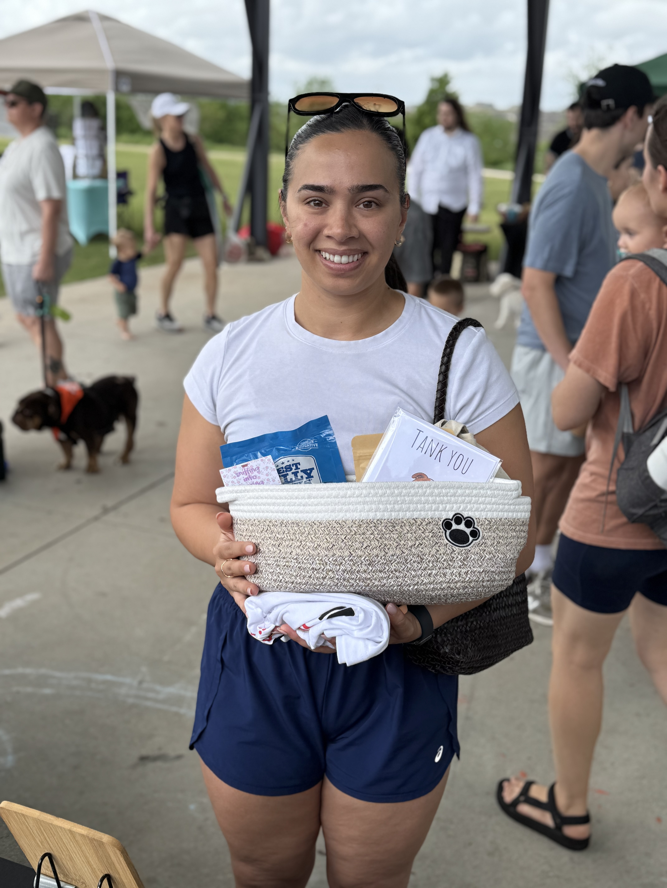
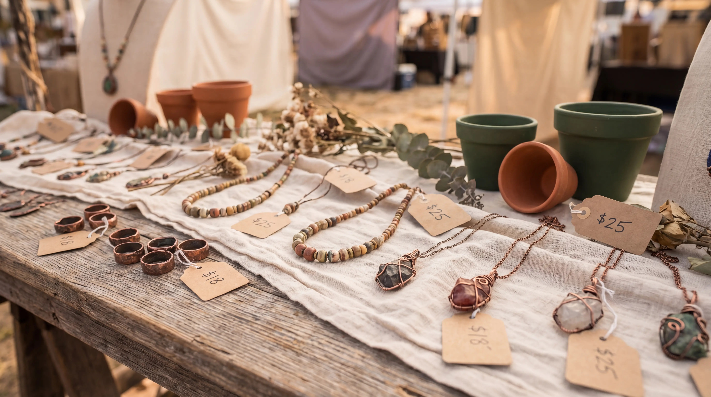
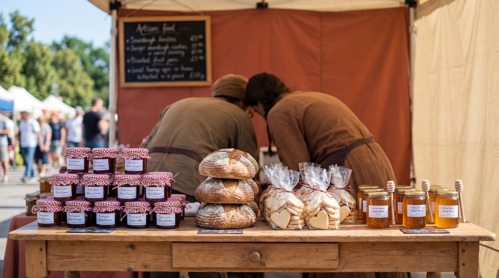

Our Story
Built on Faith. Grown by Community.
Move Mountains Artisan Market started with a simple belief: local makers deserve a platform, and neighbors deserve a reason to come together. Since 2022, that belief has grown into a four-venue monthly market series across Austin, Georgetown, and Manor, TX.

How It Started
From Manor Artisans Market to Move Mountains
The market was born in 2022 under the name Manor Artisans Market, rooted in the small community of Manor, TX just east of Austin. It started small, as these things always do: a handful of local makers, a patch of grass, and word spread through the neighborhood.
Over time the market outgrew a single venue and a single name. The rebrand to Move Mountains Artisan Market reflected a larger mission: to serve the whole Austin metro, and to name the market after what a community of makers can actually do when given the right platform.
"If you have faith as small as a mustard seed, you can say to this mountain, 'Move from here to there,' and it will move. Nothing will be impossible for you." Matthew 17:20
The Name
Faith That Moves Things
The name Move Mountains is not metaphor for the sake of it. It is drawn directly from Matthew 17:20, a verse about the outsized power of small, committed faith. For the market, that faith translates into a belief that a local artisan with a 10x10 tent and a great product can build something real, and that a community gathering over handmade goods is worth showing up for every month.
The market does not preach. But it carries that anchor: that small things, done with intention and community, move mountains.

The Values Behind the Market
Empowering Local Makers
Every booth fee goes back into making the market better for vendors. We exist to give local artisans a recurring, reliable, well-run platform. That is the whole job.
Community Over Commerce
The market is free to attend because access matters. Live music, kids activities, and free admission mean the market is a genuine neighborhood event, not a sales floor.
Authenticity in Every Booth
We do not accept resellers or drop-ship vendors. Every product at the market was made, grown, baked, or crafted by the person standing behind the table. That standard is non-negotiable.
From 2022 to Today
-
2022: Manor Launch
The market begins as Manor Artisans Market at Whisper Valley, Manor TX. Initial cohort of local vendors. Monthly cadence established from the start.
-
First Expansion
A second venue is added at Easton Park in Austin, bringing the market to a new neighborhood and doubling monthly event frequency.
-
The Rebrand
Manor Artisans Market becomes Move Mountains Artisan Market. The name change reflects the expanded geographic footprint and a broader community mission.
-
Third Venue: Goodnight Ranch
Goodnight Ranch is added as a second Saturday venue, completing the three-per-month schedule that defines the market today.
-
Today: Growing to Six Locations
Monthly markets at Easton Park, Goodnight Ranch, and Whisper Valley. Dozens of vendors per event, live music, kids programming, and an Instagram following of nearly 3,000.
The People
Run by Makers Who Believe in Makers
Move Mountains is an independently run market, not a corporate event series. The organizer is a member of the community who built this from scratch, one venue and one vendor at a time. There are no investors and no franchise. Just a person who believed local artisans deserved a better stage, and showed up every month to prove it.
Want to Be Part of It?
Whether you are a vendor ready to apply or a shopper marking the next market on your calendar, there is a place for you at Move Mountains.